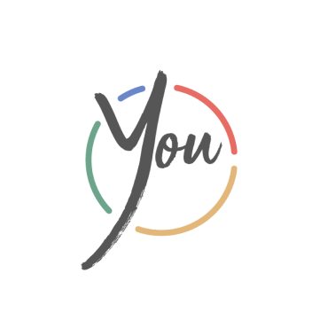

RESUME
I’m a UI/UX designer with an extensive background in graphic and interior design. I have experience in social media marketing and have 3+ years of management experience. I recently completed an online bootcamp studying UI/UX design and strive for a clean and intuitive user experience with a minimalistic, yet visually striking interface.
Experience
Jim T. Nguyen Law
UI/UX Designer (Freelance) | May 2020 - Present
Redesigned website for prospective clients for a more intuitive human experience. Developed code for website and enhanced device responsiveness. Created style guide to unify website and (my) previous work to further develop a professional brand.
Graphic Designer (Freelance) | February 2019
Designed logo and brand for a business's graphic needs (ie: letter heads, signage, business cards, etc). Iterated and finalized business cards for print.
365 Staging
Lead Designer | April 2017 - May 2019
Graphic Designer | January 2018 - May 2019
Directed a small team to prepare residential homes to be listed on the real estate marketplace. Used knowledge in interior design, such as color and texture, style, and placement to appeal to potential buyers. Curated pieces of furniture and accessories to coordinate with the architectural style of the home. Created graphic design content such as decals, posters, and flyers for company and real estate use.
Toqos
Social Media Marketing Designer | May 2017 - June 2018
Managed Instagram account by posting content and communicating with customers to sell product. Provided content for Instagram and website by photographing and writing descriptions for all products. Expanded and built brand to gain loyal customers. Designed and managed monthly newsletters, on-boarding and other sales marketing emails. Created graphic design content such as banners and call-to-action images for Instagram, website, and email use.
Boiling Point Restaurant
Assistant Manager | September 2014 - December 2016
Supervisor | December 2013 - December 2016
Trainer | March 2015 - December 2016
Server, Bobartender, Cook | June 2012 - December 2016
Entrusted with varying levels of responsibilities. Ran the restaurant efficiently by managing employees' hours and duties according to its peak and slow hours. Strong communication and people skills helped solve internal and external problems under stressful conditions.
Steve Boyer Designs
Production Intern | June 2013 - September 2013
Collaborated with a design team to create a phone app, Colorfields, for the iGlow event. Researched lead designer's style and vision to define brand consistencies in the Colorfield app. Enhanced UX design by preparing wire frames, maps, information and navigational architecture, and UI design. Attended iGlow event to demonstrate app to event attendees and oversaw the effects.
Anthropologie
Display Intern | June 2012 - August 2012
Worked with design team to iterate design concept. Sourced and selected materials to build and execute proposed display ideas. Worked with display team to decorate the window displays and created props, furniture, and other various apparatuses to market company's clothing and products.
Otis College of Art and Design
Teacher's Assistant | Drawing | February 2012 - May 2012
Took attendance, graded homework, and managed daily provisions. Prepared teaching materials, ran errands, as well as advised and answered students' questions.
Otis College of Art and Design
Technical Support Services | September 2011 - May 2013
Supervised school's tool check-out system while organizing the office and keeping the work area in an orderly fashion. Advised students on which tools to use and consulted the best plan of ation to create their project.
Taiwanese American Chamber of Commerce
Intern | August 2011 - June 2012
Made photocopies, excel sheets, and translated Chinese and English. Created graphic design content such as name tags, posters, pamphlets, and other graphics for each event.
Projects
You in Review
UI/UX Designer | January 2020 - March 2020
An interactive lifestyle tracker that helps the user keep good habits by using push notifications to actively remind the user to stay on track. Whether the user is trying to start a new good habit or kicking a bad one, this project uses an aesthetically pleasing interface with detailed insights and data to keep the user engaged and motivated.
The Wander Project
UI/UX Designer | May 2019 - August 2019
A cloud storage project that changes the way a user would make itineraries for traveling. Whether it's wanderlusting, planning a business trip, a staycation, or a trip abroad, this project uses a responsive website with mobile application capabilities and also takes inspiration from social media.
Park It or Ticket
UI Designer | May 2013
UI project that was created out of my frustration for public parking. Finding parking was already a challenge, but having to figure out how long and when parking is allowed without receiving a ticket was getting out of hand. This project was my hypothetical mobile application that would take the stress out of parking.
Humanize
UI Designer | September 2012
UI project that focuses on helping the consumer be more mindful and productive in the midst of having multiple technological distractions. This project was a hypothetical solution to help us balance using tehchnology before we become the generation that could not live or function without our phones. Although this was an issue that was ideated upon in 2012, it's almost frightening to see how much more relevant it has become.
Whole Foods Body Care
Graphic Designer | September 2012 - December 2012
A 13-week collaboration project between Otis College of Art and Design's Product Design students and Loyola Marymount University's Business students. My group worked on Whole Food's low body care sales problem and came up with a store-within-a-store solution with a new body care line to attract customers. I was in charge of the graphic design portion, which included packaging and sign design, as well as creating the presentation.
Hyundai Motor Company
Chief Storyteller | September 2011 - December 2011
A 14-week collaboration project between Otis College of Art and Design's Product Design students and Loyola Marymount University's Business students. Hyundai presented us with their problem regarding lower sales in the United States compared to sales in Korea. My group focused on ideas to keep current and future consumers interactive with the company, which included mobile apps, events, and QR enabled posters. I was in charge of the story-telling element of the presentation.
Education
Bloc
December 2018 - March 2020
UI/UX (Designer Track) Certification
Otis College of Art and Design
August 2009 - May 2013
B.F.A. Product Design
Skills
Computer Programs
Adobe Creative Suite
[AE, ID, IL, LR, and PS]Microsoft Word
[Excel, Powerpoint, and Word]Rhino [3-D Modeling and V-Ray]
Graphic Design
Branding
Logo Making
Presentations
Print
Storytelling
Product Design
Ceramics
Hand Renderings
[Sketching and Computer]
Pattern Making
Sewing [Hand and Machine]
Technical Packages
Weaving
Welding
Woodworking
UI/UX Design
Atom
Basic HTML and CSS
Figma and InVision
GitHub
Preference Testing
Prototyping
Research
Usability Testing
Wireframing
Languages
English
Mandarin Chinese
Awards
Almaden Art and Wine Festival
2009
Projects
-

UI | UX | Visual
You in Review
An interactive lifestyle tracker that helps the user keep good habits.
-

UI | UX | Visual
The Wander Project
A cloud storage project that changes itinerary making.
-

UI | Visual
Park It or Ticket
UI project that was created out of my frustration for public parking.
-

UI | Visual
Humanize
UI project created to balance use of technology and productivity.
-
Social Media Marketing
Toqos
Social Media Marketing for a small Instagram oriented company.
-

Visual | Logo | Signage
365 Staging
Graphic designs to create content for company and real estate use.
-

Graphic | Logo
JTN Law
Freelance work for logo and business cards design.